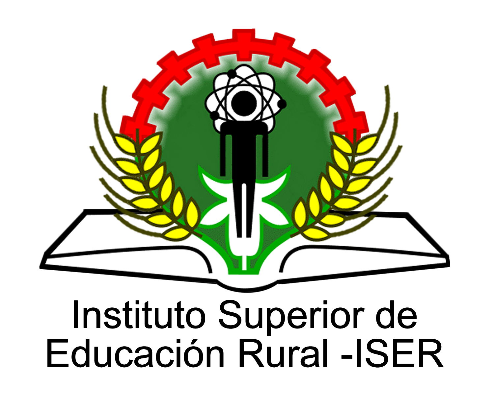

ISER PAMPLONA
Cll 8 # 8-155 Barrio Chapinero A.A 1031
Teléfono Conmutador: +57(7) 568-2597
Fax: +57(7) 568 1736
e-mail:iserpam @iser.edu.co
Horario de atención: Lunes a viernes 7:30 a.m. - 12:00 m. | 2:00 p.m. - 6:00 p.m.
Pamplona, Norte de Santander, Colombia
www.iser.edu.co
Teléfono Conmutador: +57(7) 568-2597
Fax: +57(7) 568 1736
e-mail:iserpam @iser.edu.co
Horario de atención: Lunes a viernes 7:30 a.m. - 12:00 m. | 2:00 p.m. - 6:00 p.m.
Pamplona, Norte de Santander, Colombia
www.iser.edu.co
 ICA PAMPLONA
ICA PAMPLONA
Carrera 41 No. 17-81
Teléfono: (57 1) 332 3700 - 288 4800
e-mail: contactenos@ica.gov.co
Horario de atención: Lunes a Viernes de 7:30 a.m. a 4:30 p.m. Jornada Continua
Bogotá, Colombia
www.ica.gov.co
Teléfono: (57 1) 332 3700 - 288 4800
e-mail: contactenos@ica.gov.co
Horario de atención: Lunes a Viernes de 7:30 a.m. a 4:30 p.m. Jornada Continua
Bogotá, Colombia
www.ica.gov.co
Instituto Colombiano Agropecuario
Instituto Superior de Educación Rural-ISER
Colombia,2017
Instituto Superior de Educación Rural-ISER
Colombia,2017